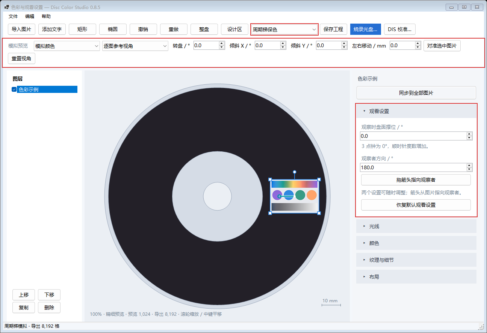

周期梯以降低色彩还原度和亮度，换取更大的可视角度。 可在工具栏切换「周期梯保色」与「实测彩色」。

选择图片，在右栏展开「观看设置」。下面两个设置各自保存，任意顺序调整，也可以反复修改。
| 设置 | 含义与操作 |
|---|---|
| 观察时盘面摆位 | 观看这张图片时，整张光盘绕盘心顺时针旋转的角度。以设计画布为参考，原来的 3 点钟方向在 0° 时朝右、90° 时朝下、180° 时朝左、270° 时朝上。 |
| 观察者方向 | 图片处于所设盘面摆位时，从图片指向观察者的方向。右为 0°、下为 90°、左为 180°、上为 270°。可以输入数值，也可以点击「拖箭头指向观察者」，在图片中拉出箭头。 |
画布保持设计排版，箭头会换算回画布方向。调整盘面摆位时，观察者方向数值保持不变，画布上的箭头相应转动。拖箭头只改变观察者方向。
松开鼠标更新预测颜色。拖箭头端点可继续调整；Shift 吸附到 15°，Esc 取消当前拖动。「恢复默认观看设置」采用原来的参考摆位：图片转到盘面右侧，观察点位于盘心上方。
每张图片有独立的观看设置，移动或缩放图片后自动重新计算配方。图片自身的旋转由「布局 → 旋转」控制。保存 .discolor 后，两项观看设置都会保存。
右栏的观看设置参与预测颜色和实际刻录配方。上方「模拟预览」用于查看这套配方在转盘、倾斜和左右移动时的表现。
「逐图参考」显示每张图片各自的设计观测状态；「整盘统一姿态」以同一个场景观察整盘。「对准选中图片」把该图片的观看场景用于整盘模拟。可在「模拟颜色」与「调整后原图」之间比较。
「光线」调整曝光、亮度和对比度；「颜色」调整全部颜色及八色 HSL；「纹理与细节」调整视角平衡和采样精度。视角平衡较低时更重视中心观看位置。导出采用每张图片选定的采样精度。「同步到全部图片」同步光线、颜色与纹理，观看设置保留各图的值。
盘面摆位将图案所在的位置、轨道方向转到观看场景中；观察者方向确定相对于图片的观察点。将光源和观察点换算回盘面坐标后，逐点计算衍射参数，再拟合三色周期梯的混合比例。预测与编码共用这一计算。
α = 盘面顺时针旋转角度，β = 观察者方位 p_world = Rz(−α) p_disc E_world = p_world + (r cosβ, −r sinβ, h) E_disc = Rz(α) E_world，L_disc = Rz(α) L_world u(p) = |t(p) · [unit(E_disc−p) + unit(L_disc−p)]| λ = u · 周期(T) · 133.3 nm
光学坐标的 Y 向上，Z 垂直盘面。模型沿用参考灯光和 500 mm 观察高度，以图片中心到盘心的距离作为横向观察距离。工程使用 v8 格式；旧工程按原有观看模型加载，主动调整观看设置时应用这套双参数模型。